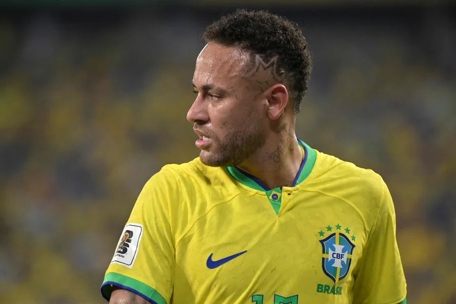
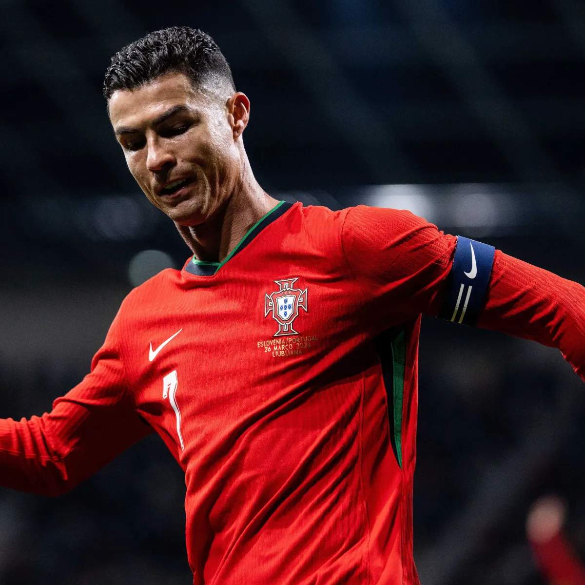
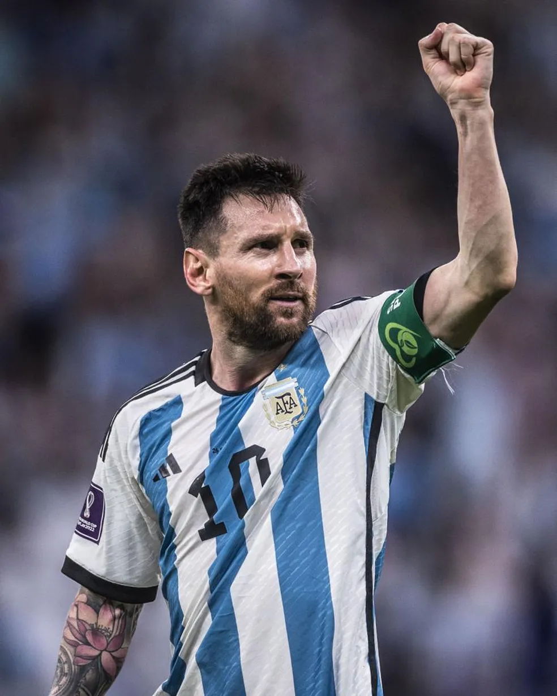

Um dos jogadores de futebol mais famosos do mundo, conhecido por sua habilidade, dribles e gols espetaculares. Ele já jogou por grandes clubes como Santos, Barcelona e Paris Saint-Germain.

Mais Informações
Cristiano Ronaldo dos Santos Aveiro é um futebolista português que atua como ponta-esquerda ou avançado. Atualmente joga pelo Al-Nassr da Arábia Saudita, onde venceu a Liga dos Campeões Árabes de 2023. Capitão pela Seleção Portuguesa, onde conquistou de forma inédita a Eurocopa de 2016

Mais Informações
Considerado por muitos o melhor jogador de todos os tempos, conhecido por sua habilidade técnica, visão de jogo e dribles. Atuou praticamente toda a sua carreira no Barcelona, onde conquistou diversos títulos.

Mais Informações